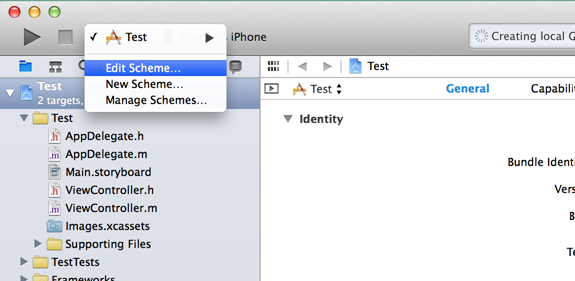
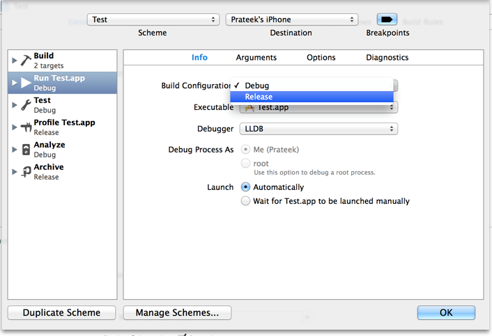
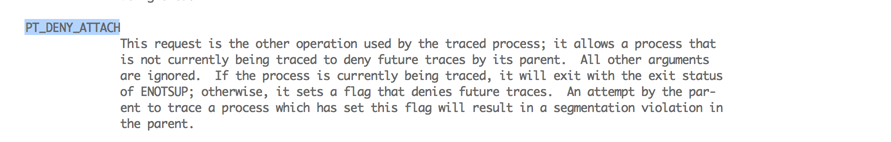
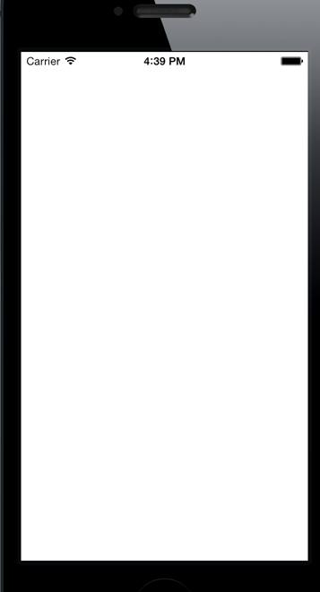
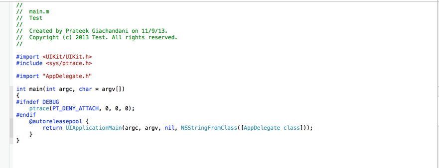

In the previous articles, we have looked at how we can use debuggers and tools like Cycript to do runtime analysis and manipulation of IOS Applications. We have looked at how we can modify the actual implementation of a method during runtime by changing the values in the registers using GDB, and also looked at how we can completely swizzlemethod implementations using tools like Cycript. With tools like Cycript and GDB in his arsenal and with a copy of your application’s binary, the attacker is is complete control. However, there are certain techniques a developer can use to make the job of the hacker much more difficult. In this article, we will look at the techniques a developer can use in his application to defend it against runtime analysis and manipulation.
In Xcode, there are certain checks that an attacker can use to determine whether an application is being debugged or not. In Xcode, use the following piece of code wherever you want to put a check for a debugger.
#ifndef DEBUG
SEC_IS_BEING_DEBUGGED_RETURN_NIL();
#endif
As the name specifies, this macro returns nil if the application is being debugged. You can put this check in important places in your application where you think important data is being accessed or returned in a function. If the application is being debugged at that moment, then this macro will return nil and hence your application wont function normally thereby causing problems for the attacker. Or you can simply call this macro with a timer and whenever you find that your application is being debugged, you delete all the important information stored in the app, remove all the important files etc. But please note that the attacker can just hijack your method implementation using Cycript, hence it is advisable to just use a macro instead of using this macro inside a method. Please note that this macro only works in release mode. To test it on your device, you will have to enable release mode on your build. To do that, select your scheme and click on Edit Scheme

Then under Info, set the Build configuration to Release.

Now, you can just run this application on your device using Xcode and you will see that the check for debugger will succeed. This is because Xcode attaches a debugger while running an application.
Again, this does not guarantee that your application will not be debugged. A skilled attacker can just patch out all the assembly instructions for this macro from the application binary. As a developer, you should put this check in multiple places in the application to make the job difficult for the hacker.
Another technique to prevent these debuggers from attaching to your application is by using the ptrace function. Using this function with a specific parameter, you can just deny any other debugger the ablity to attach to your application. The ptrace function is used by the debuggers like GDB and LLDB to attach to a process. Using the ptrace command with the parameter PT_DENY_ATTACH will tell the function to not allow this application to be traced. Here is a screenshot that tells about the PT_DENY_ATTACH parameter from Apple’s documentation.

Lets try this out. Create a new Project in Xcode. Click File->New->Project->Single View Application. Then run it in the simulator. You will see an empty view this.

Now go to the main.m file and modify it by adding the following code.
Import the ptrace.h file and add the following code inside the main function.
#ifndef DEBUG
ptrace(PT_DENY_ATTACH, 0, 0, 0);
#endif
Your main.m file should look like this.

Now run the application. You will see that the application fails to launch. This is because when Xcode launches this application, it tries to attach a debugger (LLDB or GDB) to the application. Because of the code that we just wrote in the main.m file, it is unable to do so and hence it quits the application.
To make sure this is exactly what is happening, double tap the home button in the simulator and kill the Test application. Now launch it again. It will launch properly this time. This is because it was not launched via Xcode this time and hence a debugger wasn’t attached to it.
Ofcourse, this method also doesn’t guarantee that your application will be secure. A skilled attacker can just patch this call out from your binary after decrypting it. As a developer, you should try and use this method in multiple places in the app which would further complicate the attacker’s job.
It is important that even though both the techniques mentioned above will try and prevent debuggers from attaching to your application, it won’t protect from tools like Cycript which do not trace the application. As a developer, you can make the following checks in your application to make the hacker’s job as difficult as possible. For e.g, you can add false methods in your application, something that would get the attention of a hacker. For e.g a method with the name userDidLogin:(BOOL)didLogin; will surely attrack the attacker’s attention. Ofcourse, he will try to execute it using Cycript. In this method’s implementation, you can clear all the important information in the app, and maybe even report to the server that this application is being breaked into. For banking apps that require special security, you can also check whether the device is jailbreaked or not. If it is, then deny all access to the server and remove all the important information stored locally in the app. We will look at how to check for a jailbroken device in the next article. Another thing you can do is check if your application is cracked or not and if it is, perform all the necessary steps to stop the attacker from gaining any further information from your application. There is a very simple class on github that can get the job done for you. Ofcourse, the attacker can always hijack this method’s implementation, so name it to something that doesn’t look suspicious.
For methods that check for the security of the application, you can also change their names so they don’t look important. For e.g a method that checks whether the application is being debugged shouldn’t be named as -(BOOL)isAppBeingDebugged. This is because it will definitely attract the attention of the attacker and he can just swap this method’s implementation. Instead, it would have been good to change this method’s name to something like -(BOOL)didChangeColor or -(BOOL)didSetFont. In this case, this function will look much less important to the attacker.
If you have detected any suspicious activity and think that it would be best to just exit the application, you can do that with the following command.
exit(-1);
This will exit the application.
Finally, it is very important to note that no application is secure in the hands of a skilled attacker. With a copy of your application’s binary and will tools like Cycript, GDB in their hands, a hacker is in complete control. What we can do as a developer is use as many checks as we can to prevent the application from being comprised so that the attacker can just give up and move on to some other application that is more easily exploitable.